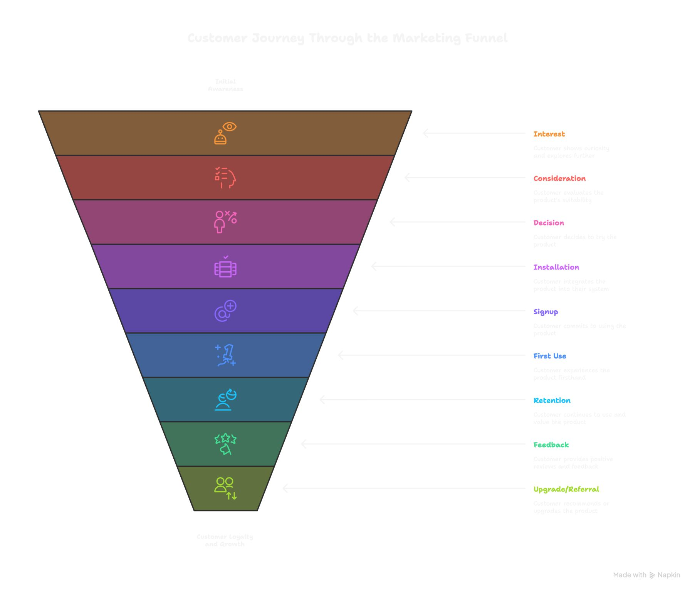

תחיית המתים.
פורסם במקור ב LinkedIn
תחיית המתים.
אנחנו בונים כלי AI ומתחרים בשוק רווי, כמעט חסר חמצן.
סביר להניח שגם אתם מוקפים בכלים דומים. אולי התקנתם כמה, ניסיתם אחרים, ובודדים באמת שרדו אצלכם לאורך זמן. מתוך עשרות כלים שהתגלגלו אליכם דרך פיד, הרצאה או המלצה - על כמה באמת שילמתם?
בשלב הזה, במקום להסתפק בניסוי כלים עצמיים או לבנות על תחושת בטן, החלטנו לעצור רגע ולעשות משהו אחר: Pre-Mortem.
(רעיון של Mati Horowitz הגאון ולו מגיע כל הקרדיט!)
במקום לחכות שדברים יישברו אחרי ההשקה ו״לנתח את הגופה״, אנחנו מנסים להבין מראש היכן בדיוק הם *עלולים* להישבר. מהצעד הראשון שבו משתמש פוגש את המוצר - ועד הרגע שהוא משכנע חבר לשלם עליו גם כן.
המטרה פשוטה, אבל שיטתית: למפות מראש את כל הנתיבים בהם המוצר שלנו עלול להיכשל, להגדיר מה ייחשב הצלחה, ולוודא שיש מישהו שמחזיק באחריות על כל שלב.
המפה נראית כך:
1. מודעות – איך בכלל מגלים אותנו
2. סקרנות – מה גורם למישהו לרצות לדעת עוד
3. שקילה – באילו כלים אחרים הוא משווה אותנו
4. החלטה – מה הופך את ה"כן" לאפשרי
5. התקנה – עד כמה מהר זה קורה בפועל
6. הרשמה – האם יש משהו שחוסם באמצע
7. שימוש ראשון – האם יש רגע של "אהא"
8. שימור – האם יש סיבה לחזור שוב
9. משוב – האם הוא מדבר על זה עם אחרים
10. שדרוג / המלצה – האם זה שווה תשלום
כל שלב כזה הוא פתח לכשל. אבל גם נקודת מבחן.
ברגע שחילקנו את השלבים, חילקנו את הקבוצה (Pod) לאחראי(ם) על כל אזור - וכל אחראי עושה זום אין לאזור הזה ועונה על השאלות: מה נחשב הצלחה, מה יכול להוות כשלון ומה צריך כדי לצלוח את השלב הזה (ממש אקשן אייטמס עליו הוא אחראי)
המטרה היא לענות על שאלות כמו: מה אם נבנה מוצר מצוין, אבל ניפול במדרגה השישית? או נישאר שקופים בשלב הראשון? או שנעבור את הכול - אבל לא נצליח לייצר את ה״אהא״ שגורם למשתמש להישאר?
אנחנו לא יודעים עדיין איך ייראה ההשקה, אבל לפחות אנחנו יודעים עכשיו מה ייראה כמו כישלון, מה שמביא אותנו לנקודת פתיחה טובה יותר ומוכנה יותר.
